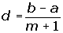
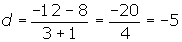
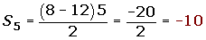
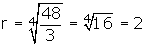
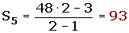
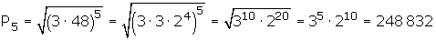

Progresiones
Progresión aritmética
Una progresión aritmética es una sucesión de números tales que cada uno de ellos (salvo el primero) es igual al anterior más un número fijo llamado diferencia que se representa por d.
8, 3, -2, -7, -12, ...
3 - 8 = -5
-2 - 3 = -5
-7 - (-2) = -5
-12 - (-7) = -5
d= -5.
Término general de una progresión aritmética
1. Si conocemos el 1er término.
an = a1 + (n - 1) · d
8, 3, -2, -7, -12, ..
an= 8 + (n-1) (-5) = 8 -5n +5 = = -5n + 13
2. Si conocemos el valor que ocupa cualquier otro término de la progresión.
an = ak + (n - k) · d
a4= -7 y d = -5
an = -7+ (n - 4) · (-5)= -7 -5n +20 = -5n + 13
Interpolación de términos
Interpolar medios diferenciales o aritméticos entre dos números, es construir una progresión aritmética que tenga por extremos los números dados.
Sean los extremos a y b, y el número de medios a interpolar m.

Interpolar tres medios aritméticos entre 8 y -12.

8, 3, -2, -7 , -12.
Suma de términos equidistantes
Sean ai y aj dos términos equidistantes de los extremos, se cumple que la suma de términos equidistantes es igual a la suma de los extremos.
ai + aj = a1 + an

a3 + an-2 = a2 + an-1 = ... = a1 + an
8, 3, -2, -7, -12, ...
3 + (-7) = (-2) + (-2) = 8 + (-12)
-4 = -4 = -4
Suma de n términos consecutivos

Calcular la suma de los primeros 5 términos de la progresión : 8, 3, -2, -7, -12, ...

Progresión geométrica
Una progresión geométrica es una sucesión en la que cada término se obtiene multiplicando al anterior una cantidad fija r, llamada razón.

Si tenemos la sucesión: 3, 6, 12, 24, 48, ...
6 / 3 = 2
12 / 6 = 2
24 / 12 = 2
48 / 24 = 2
r= 2.
Término general de una progresión geométrica
1. Si conocemos el 1er término.
an = a1 · rn-1
3, 6, 12, 24, 48, ..
an = 3· 2n-1 = 3· 2n · 2-1 = (3/2)· 2n
2. Si conocemos el valor que ocupa cualquier otro término de la progresión.
an = ak · rn-k
a4= 24, k=4 y r=2.
an = a4 · rn-4
an = 24· 2n-4= (24/16)· 2n = (3/2) · 2n
Interpolación de términos
Interpolar medios geométricos o proporcionales entre dos números, es construir una progresión geométrica que tenga por extremos los números dados.
Sean los extremos a y b, y el número de medios a interpolar m.

Interpolar tres medios geométricos entre 3 y 48.

3, 6, 12, 24 , 48.
Suma de n términos consecutivos

Calcular la suma de los primeros 5 términos de la progresión : 3, 6, 12, 24, 48, ...

Suma de los términos de una progresión geométrica decreciente

Calcular la suma de los términos de la progresión geométrica decreciente ilimitada:


Producto de dos términos equidistantes
Sean ai y aj dos términos equidistantes de los extremos, se cumple que el producto de términos equidistantes es igual al producto de los extremos.
ai . aj = a1 . an

a3 · an-2 = a2 · an-1 = ... = a1 · an
3, 6. 12, 24, 48, ...
48 · 3 = 6 · 24 = 12 · 12
144 = 144 =144
Producto de n términos equidistantes

Calcular el producto de los primeros 5 términos de la progresión: 3, 6, 12, 24, 48, ...
